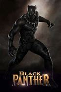

BLACK PANTHER
Release date: 17 Jan 2020 (United States)
Directors: Adil El Arbi · Bilall Fallah
DVD release date: 31 Mar 2020
Summary: 2hr 4min ·Crime/Thriller
Languages: English - Spanish
Costume designer: Dayna Pink
SUMMARY
Centuries ago, five African tribes were at war with each other over possession of a meteorite filled with vibranium, the strongest metal in the universe. One warrior ingests a heart-shaped herb affected by the vibranium and finds that he is suddenly bestowed with super-human powers. He becomes the first Black Panther. His first accomplishment is to unite all but one of the tribes, forming the new nation of Wakanda. They use the vibranium to become a technological superpower, but isolate themselves and hide from the rest of the world by pretending to be a third world nation. In 1992, King T'Chaka visits his brother N'Jobu in Oakland, California, where N'Jobu is an undercover spy. T'Chaka accuses N’Jobu of helping an arms dealer named Ulysses Klaue attack Wakanda and steal vibranium. N'Jobu's partner, Zuri, confirms that TChaka's suspicions are true. In the present day; T'Chaka's son, T'Challa, is to be crowned King after his father’s death. He and Okoye, the leader of the Dora Milaje royal guard, extract Nakia, T'Challa's ex-lover, from her undercover assignment so that she can attend his coronation ceremony along with his sister Shuri and his mother Ramonda. At the ceremony, the leader of the Jabari Tribe, M'Baku, challenges T'Challa to ritual combat for the crown. T'Challa defeats M'Baku and persuades him that it would be better to yield rather than to die in combat. Klaue and an American named Erik Stevens (aka Killmonger) steal a Wakandan artifact made of vibranium from a museum in London. W'Kabi, T'Challa's friend and Okoye's crrent lover, urges T'Challa to bring back Klaue, dead or alive. T'Challa, Okoye and Nakia travel to Busan in South Korea where they have learned that Klaue is planning to sell the artifact there to a CIA agent, Everett K. Ross. A firefight ensues and Klaue attempts to escape but he is caught by T'Challa who reluctantly releases him into Ross's custody. Klaue tells Agent Ross that Wakanda is not a third world nation at all, but a technological super-power. But before they can go any further, Killmonger attacks their hideout and rescues Klaue. Ross is severely injured and so rather than chase Klaue, T'Challa takes Ross to Wakanda where their medical technology can save him. While Shuri heals Ross, T'Challa confronts Zuri about N'Jobu. Zuri then explains that, back in the 1990s, N'Jobu was planning to give Wakandan technology to people of African descent across the globe so that they could overthrow their oppressors with it. As T'Chaka arrested N'Jobu, N'Jobu attacked Zuri, leaving T'Chaka no choice but to kill him. He ordered Zuri to lie about what happened and to say that N'Jobu had simply disappeared. However, they left behind N’Jobu’s son, who T'Challa realizes is in fact Killmonger. Killmonger kills Klaue and takes his body to Wakanda, bringing it before tribal elders. He reveals his identity as T’Challa’s cousin and puts forth his claim to the throne. Killmonger challenges T'Challa to ritual combat; he kills Zuri and then defeats T'Challa, throwing him over a waterfall. He ingests the heart-shaped herb to gain the power of the Black Panther and then orders that the rest of the herbs be incinerated, but Nakia manages to extract one last herb first. Killmonger is supported by W'Kabi and his army, and prepares to distribute shipments of vibranium around the world. Nakia, Shuri, Ramonda and Ross flee to the Jabari tribe to get help. They find a comatose T'Challa, who has been cared for by the Jabari tribe in return for his benevolence in sparing M'Baku's life. Healed by Nakia's herb, T'Challa returns to Wakanda to fight Killmonger. Shuri, Nakia and the Dora Milaje join T'Challa, and confronted by Okoye, W'Kabi and his army stand down. Fighting in the vibranium mine, T'Challa manages to stab Killmonger. Killmonger refuses to allow himself to be healed as he would rather die a free man than live in a prison. T'Challa establishes an outreach center at the building in Oakland where N'Jobu died, to be overseen by Nakia and Shuri. He intends for the center to the first in a series of efforts by Wakanda to help uplift impoverished communities around the world. T'Challa appears before the United Nations, finally revealing Wakanda's true identity as a technological